Accompagnement prénuptial et post-nuptial
Préparation émotionnelle, spirituelle et pratique au mariage
Suivi après le mariage pour consolider le couple
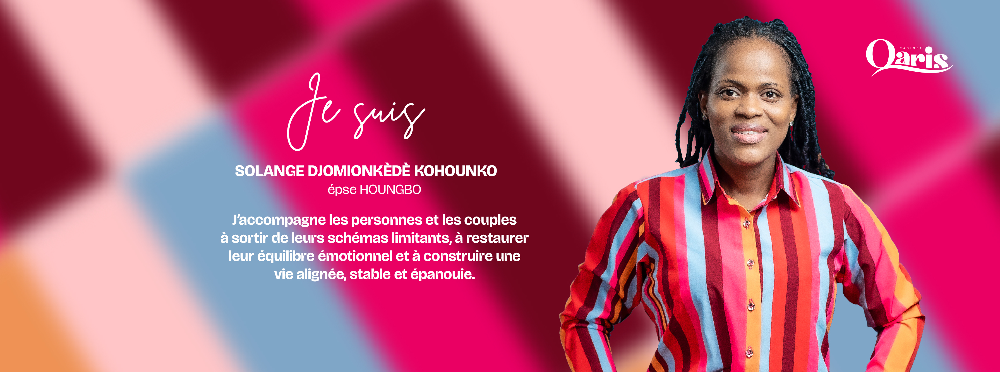
Cabinet d'accompagnement, de relations d'aide, de formation, et de conseil stratégique humain

Des accompagnements personnalisés pour vous aider à avancer sereinement dans votre vie personnelle et relationnelle
Préparation émotionnelle, spirituelle et pratique au mariage
Suivi après le mariage pour consolider le couple

Construction identitaire
Gestion émotionnelle
Orientation et confiance en soi

Éducation des enfants
Communication parents-enfants
Gestion des conflits familiaux
Couples en difficulté
Couples en transition
Couples désirant renforcer leur union

Découverte de soi
Investissement personnel
Guérison des blessures affectives
Construction d'une vision saine de vie et de couple

Espace d'écoute confidentiel
Soutien émotionnel et spirituel
Gestion des pressions et responsabilités
Un accompagnement logistique structuré pour préparer votre mariage avec sérénité, clarté et excellence.
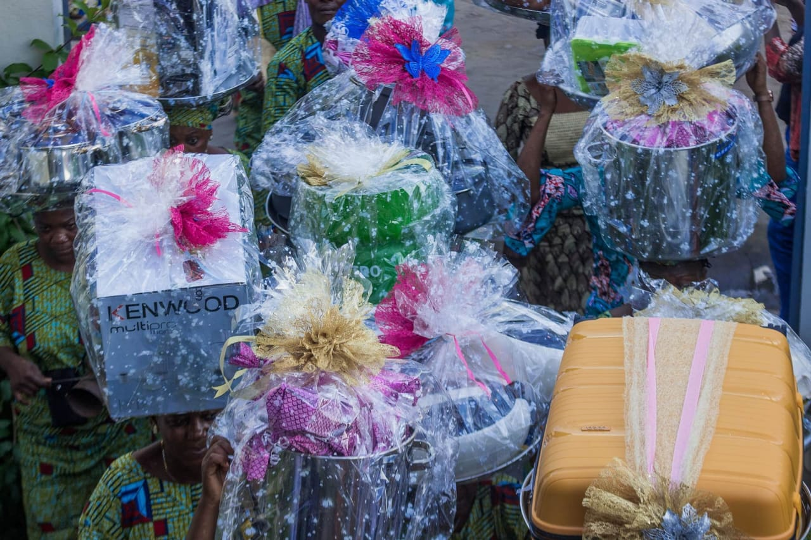
Nous vous accompagnons dans la préparation et l'achat de la liste de dot avec méthode, discrétion et respect des traditions familiales.
Grâce à notre approche personnalisée, vous bénéficiez d'une organisation claire, de conseils pratiques et d'un suivi rigoureux pour éviter le stress de dernière minute.
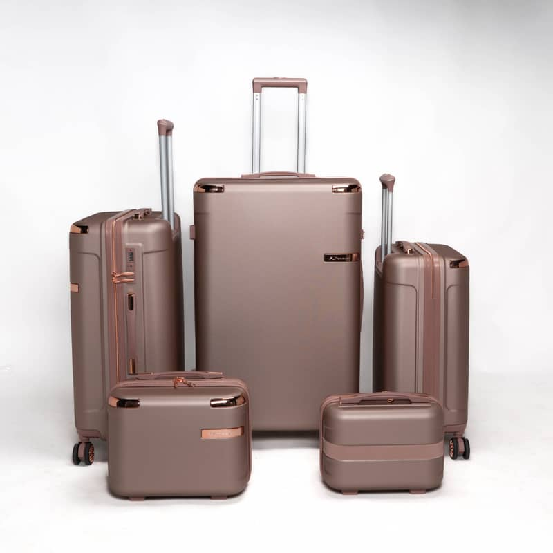
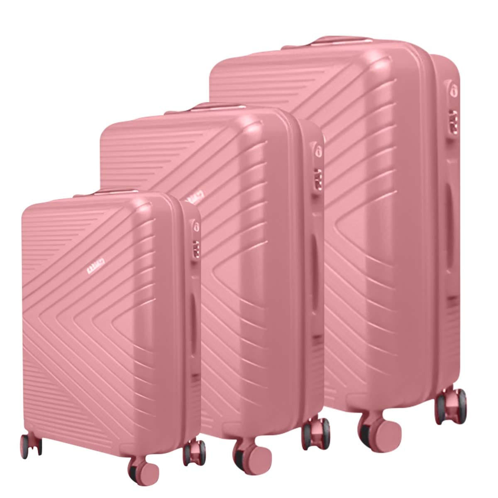
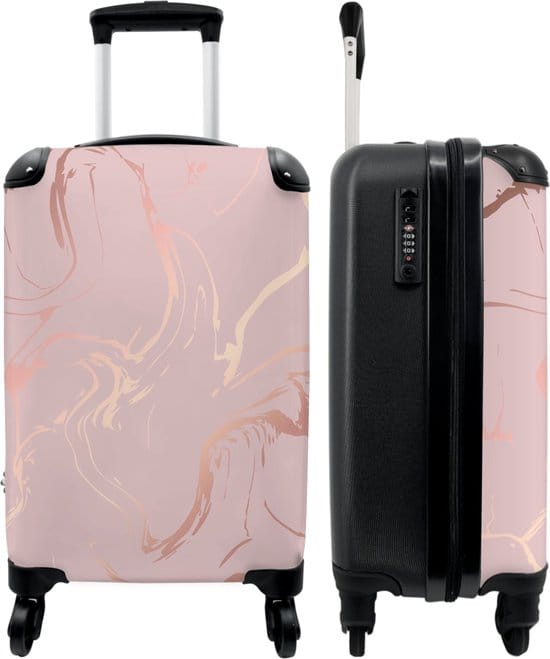
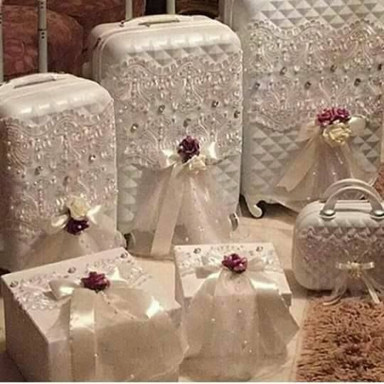
Nous assurons la constitution, la vérification et l'ordonnancement de la valise de la mariée selon les besoins du programme et des cérémonies.
Chaque élément est planifié avec précision pour garantir une préparation fluide, élégante et conforme aux exigences de votre célébration.
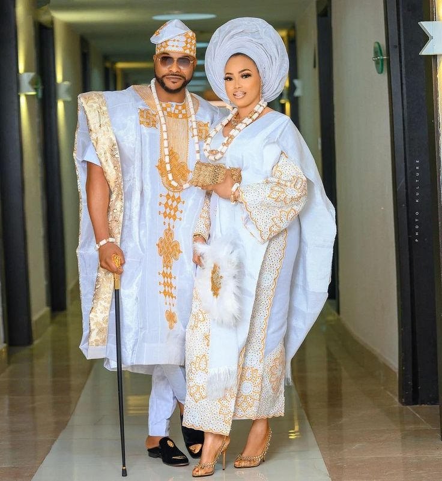
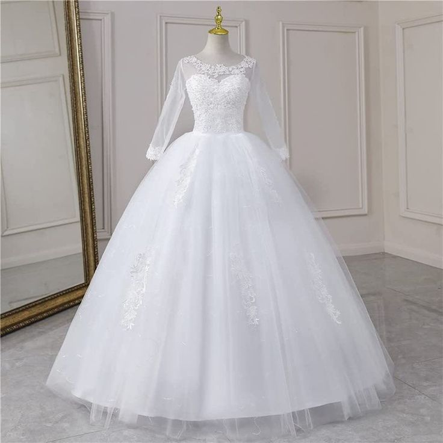
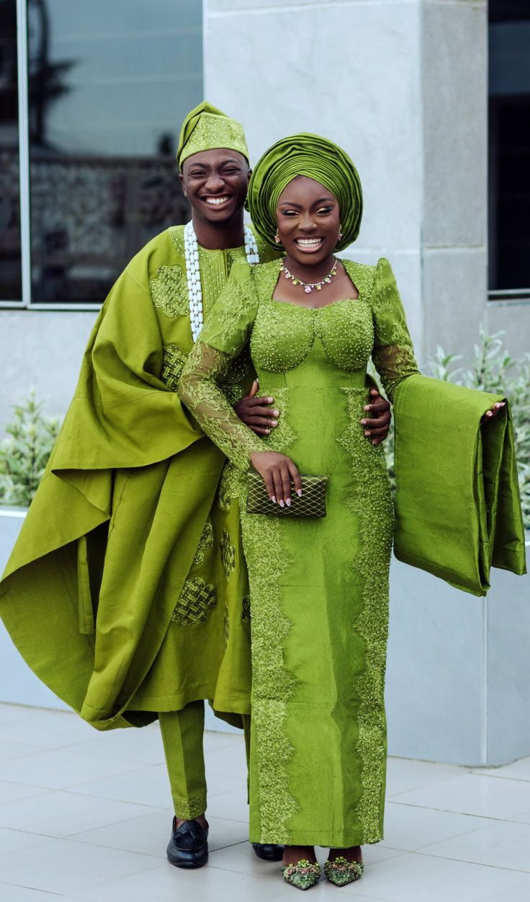
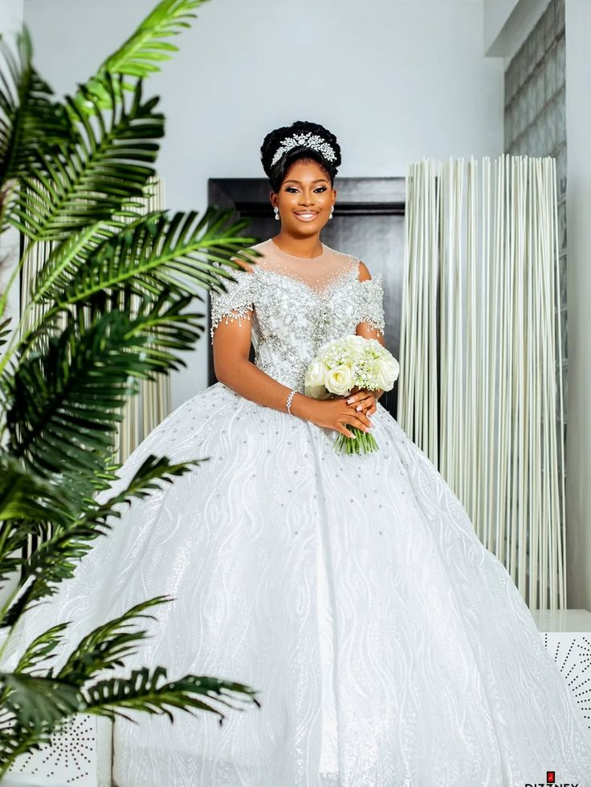
Tenues, chaussures et accessoires sont sélectionnés et harmonisés avec votre vision, votre identité et le style de l'événement.
Nous coordonnons chaque détail vestimentaire pour un rendu cohérent, raffiné et adapté au déroulement complet du mariage.
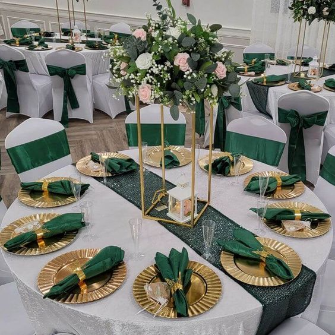
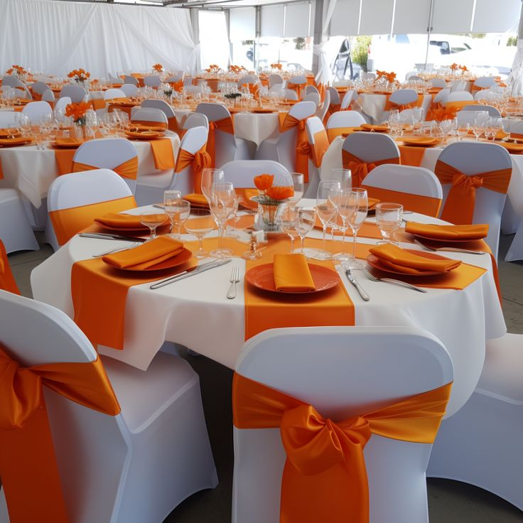
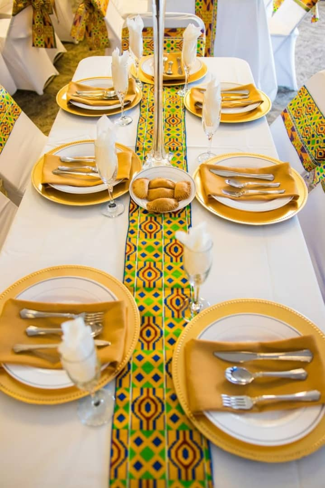
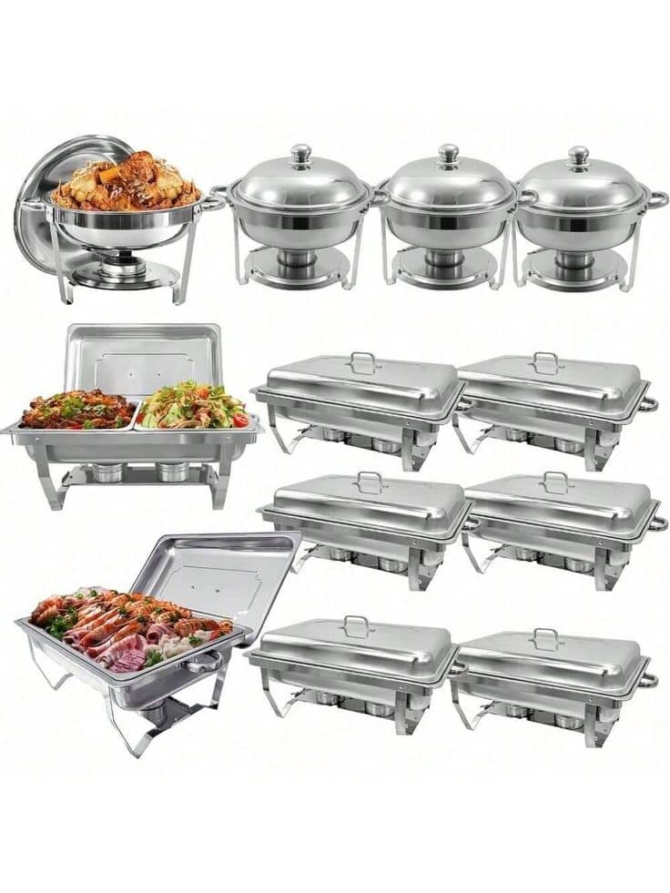
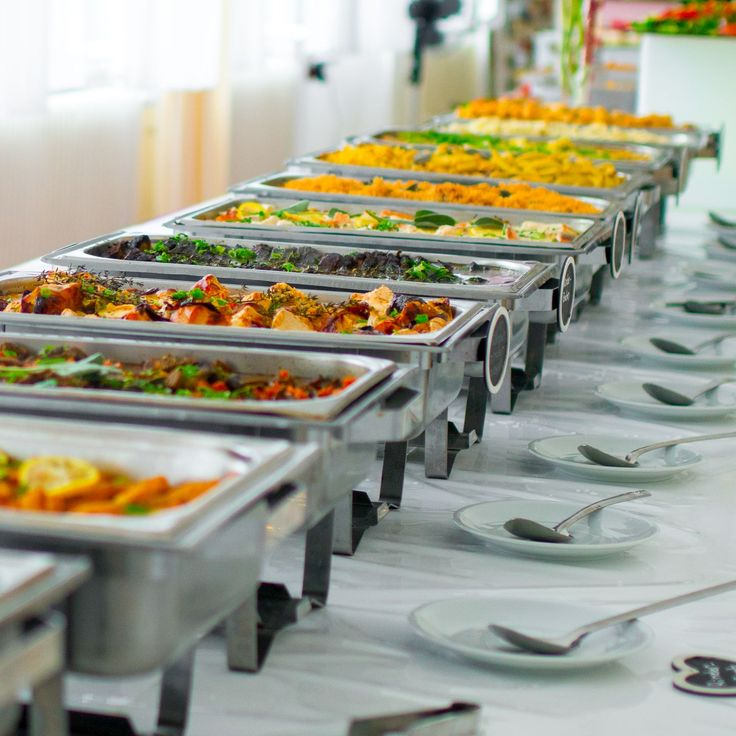
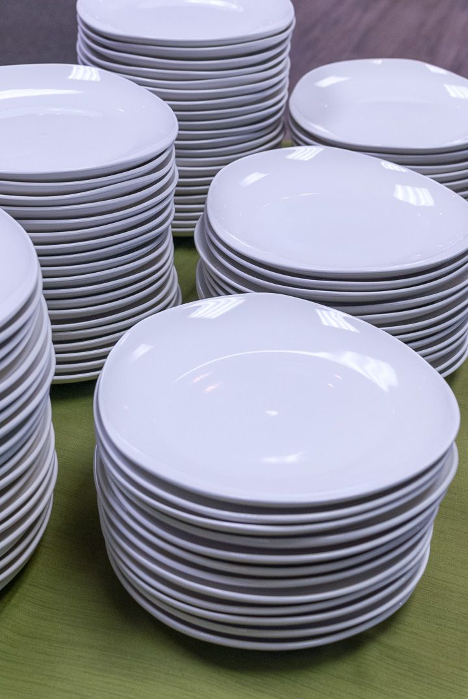
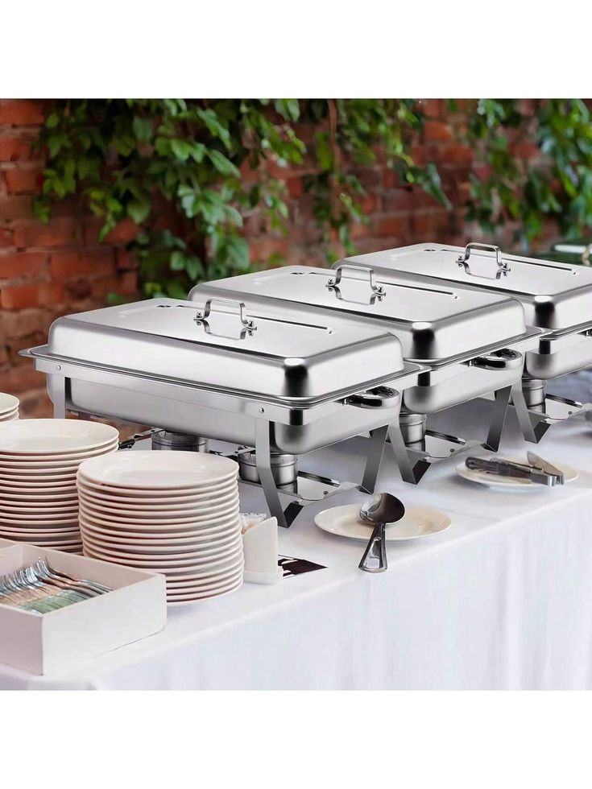
Nous prenons en charge l’organisation complète de votre mariage : planification, service traiteur, location de chaises et de vaisselle, réalisation du gâteau, couverture médiatique, animation DJ et coordination de tous les détails pour un événement parfaitement orchestré.
Expertise bienveillante au service de votre épanouissement. Découvrez nos engagements fondamentaux.
Vos échanges sont protégés dans un cadre strictement confidentiel et sécurisé.
Chaque individu est accueilli avec empathie, sans jugement, dans son intégrité.
Nous adhérons aux plus hauts standards éthiques et codes professionnels.
Honnêteté et clarté dans chaque interaction, relation et engagement.
Protection spécifique et vigilance envers les couples, familles et populations vulnérables.
Accompagnement respectueux de vos valeurs spirituelles et de votre foi.
Excellence dans chaque accompagnement, formation et service proposé.
Un environnement safe, éthique et professionnel pour votre parcours de croissance.
Ce que nos clients disent de leur expérience avec le Cabinet QARIS
Je suis fiancé, j’ai 28 ans. Lorsque j’ai intégré l’École de mariage du Cabinet QARIS, ma motivation était claire : je voulais me préparer sérieusement à devenir un bon mari et un bon père.
En grandissant, je n’ai pas eu de véritable modèle masculin pour m’orienter. Je ne savais pas concrètement comment aimer une femme, comment bâtir un foyer stable, ni comment être un père présent et engagé. J’avais besoin de comprendre mon rôle, mes responsabilités et la posture juste à adopter dans le mariage et dans la paternité.
Au cours de la formation, j’ai énormément appris. Les modules sur la relation homme-femme et la gestion des conflits m’ont particulièrement marqué. Ils m’ont aidé à mieux comprendre les dynamiques du couple et à acquérir des outils pratiques pour gérer les tensions sans détruire la relation.
Aujourd’hui, je vois déjà l’impact dans ma vie. Je suis devenu un fiancé plus attentif, plus doux et plus patient. J’apprends à prendre soin de ma future épouse, à rechercher son bien et à construire une relation fondée sur la compréhension et le respect. Ma vision du couple a profondément évolué, et cela se ressent dans mon comportement quotidien.
Les modules étaient structurés, clairs et enrichissants. La formatrice a su créer un cadre d’apprentissage rassurant, avec des exemples concrets et des témoignages qui facilitaient la compréhension.
Je recommande cette formation sans hésitation. J’en parle autour de moi, car je suis convaincu qu’elle devrait être accessible dans tout le Bénin et même au-delà. Elle répond à un besoin réel et prépare véritablement au mariage.
Je m’appelle E.M., je suis fiancée. Avant de prendre part à l’École de mariage du Cabinet QARIS, je voulais que cette formation soit une occasion pour mon fiancé et moi de nous solidifier, de mieux comprendre notre projet de mariage et de poser des bases solides pour notre couple.
Nous avions déjà commencé à travailler sur la communication, mais ce n’était pas encore comme il faut. J’avais reçu une formation auparavant, ce qui m’avait préparée à certaines choses, mais mon fiancé avait encore des difficultés à comprendre certains aspects que moi je comprenais déjà.
Pendant la formation, j’ai découvert l’essentiel : la mission des époux. Le module sur le rôle de l’homme et de la femme m’a particulièrement marquée. Il a montré que si l’homme ne connaît pas son rôle et la femme non plus, tout devient compliqué. L’image du roc et de la base qu’est la communication m’a beaucoup aidée. C’est la fondation et ce que l’on construit dessus, c’est notre maison à nous deux.
Aujourd’hui, cette formation a transformé notre manière de communiquer. Nous suivons les modules ensemble, ce qui nous a permis de mieux comprendre ce que l’autre disait. Ce n’est plus que l’un reste dans son coin ; quand un sujet vient, nous en parlons. Nous sommes sur la même longueur d’onde et cela facilite nos échanges.
Les cours étaient profonds et très pratiques. La formatrice a su aborder chaque aspect avec des exemples concrets et des partages qui ont enrichi chaque séance. J’ai beaucoup aimé cette formation et elle m’a vraiment apporté beaucoup.
Je recommanderais cette formation à d’autres personnes parce qu’elle aide énormément. Pour les fiancés, elle permet de poser des bases solides. Pour les couples déjà mariés, elle peut renforcer et restaurer leur relation. Et pour ceux qui accompagnent des jeunes ou des couples, elle donne des outils concrets pour mieux les guider.
Je m’appelle S.S., je suis fiancé. Avant de prendre part à l’École de mariage du Cabinet QARIS, ma principale difficulté était la communication. Je voulais en apprendre davantage sur le mariage, sur la manière de vivre ensemble et d’avoir un couple épanoui et heureux.
À un moment, j’avais même peur de me marier à cause des échecs que j’ai vus autour de moi et de mon ignorance dans la gestion des conflits.
Pendant la formation, j’ai appris énormément de choses essentielles, notamment le principe de quitter son père et sa mère pour s’attacher à sa femme. Nous avons aussi approfondi le rôle de l’époux et de l’épouse. Ce qui m’a marqué, c’est de comprendre que plus ma fiancée et moi nous nous rapprochons l’un de l’autre, plus la distance qui nous sépare se réduit. J’ai pris conscience qu’en tant qu’homme et futur chef de famille, j’ai un rôle important : aimer ma femme volontairement, sans attendre en retour et du plus profond du cœur.
Cette formation a eu des effets concrets. Moi qui n’avais aucune notion de communication, j’ai appris à ne plus faire le fort, à ne plus cacher mes émotions ni pleurer seul. Cela m’a permis de comprendre comment vivre réellement avec quelqu’un, d’être de cœur à cœur et de parler à l’autre sans le blesser. J’ai compris l’importance de traiter mes propres blessures émotionnelles avant d’entrer dans le mariage.
Les cours étaient profonds et très pratiques. La formatrice a su créer des moments d’échange et d’ouverture d’esprit où l’on pouvait parler de tout en profondeur. J’ai beaucoup apprécié cette formation et elle m’a apporté de nombreux outils pour construire une relation solide et épanouie.
Je recommande cette formation à 100 % ! Elle a changé ma vision, ma perception et ma manière d’aborder le mariage. C’est une étape indispensable pour toute personne qui veut s’engager dans ce processus.
Je m’appelle L.B., je suis fiancée. Avant de prendre part à l’École de mariage du Cabinet QARIS, je voulais comprendre ce que signifie réellement le mariage et connaître ses bases. Je souhaitais aussi trouver des solutions aux difficultés rencontrées dans mes fiançailles.
La communication me posait problème et je manquais de compréhension, ce qui créait souvent des tensions dans la relation.
Pendant la formation, j’ai appris à pardonner, à communiquer sainement et à m’exprimer avec maturité. J’ai compris l’importance de reconnaître ma part de responsabilité, de gérer ma colère et de chercher des solutions plutôt que de blâmer l’autre. J’ai également appris à guérir de mes blessures passées, à construire un projet de vie et à grandir ensemble.
Les thèmes qui m’ont le plus marquée sont la parentalité, le pardon, la gestion des conflits et la mission des conjoints.
Cette formation a complètement changé ma vision du mariage. J’ai compris que le mariage est un engagement où l’amour doit être entretenu et où les responsabilités sont partagées. Il n’y a ni gagnant ni perdant, mais une seule équipe. Les effets sont déjà visibles dans ma relation avant et après la formation.
J’ai beaucoup apprécié cette formation. En seulement une semaine, j’ai vu des changements concrets dans mes fiançailles. Les expériences partagées par la formatrice étaient sincères et riches d’enseignements, permettant d’éviter des erreurs et de mieux réagir dans des situations difficiles. L’ambiance était saine et chaque participant pouvait s’exprimer librement.
Je recommande cette formation à toutes les personnes qui souhaitent préparer efficacement leur mariage. Elle transforme les mentalités, aide à éviter des erreurs coûteuses émotionnellement et construit des foyers solides avec une vision claire et équilibrée du couple.
Je m’appelle D.S., je suis marié. Avant ma participation à l’École de mariage du Cabinet QARIS, je voulais acquérir des connaissances sur la gestion de la vie de couple, notamment pour mieux comprendre la communication et les traits caractéristiques de la femme.
Pendant la formation, j’ai découvert les différences entre hommes et femmes et le module sur la communication m’a particulièrement marqué.
Cette formation a déjà eu des effets concrets dans ma relation. Elle m’a aidé à mieux comprendre ma partenaire et à améliorer notre manière de communiquer.
Les cours étaient de très bonne qualité, l’accompagnement exceptionnel et la formatrice toujours à l’écoute.
Je recommande cette formation à toutes les personnes qui souhaitent mieux comprendre la dynamique du couple. Les modules sont pertinents et la pédagogie adaptée pour tirer le meilleur de chaque enseignement.
Je m’appelle C.M., je suis fiancée. Avant de suivre ma participation à l’École de mariage du Cabinet QARIS, j’avais des attentes parfois irréalistes vis-à-vis de mon fiancé. Ces attentes créaient de petits conflits entre nous.
Je voulais souvent qu’il fonctionne comme moi et qu’il voie les choses selon ma perspective.
J’avais du mal à accepter certaines différences pourtant naturelles entre l’homme et la femme et, avec du recul, je réalise que j’avais une image partiellement déformée du mariage, influencée par mes propres projections.
Pendant la formation, j’ai découvert que je suis responsable de ma guérison intérieure et que je ne suis pas appelée à rester victime, mais à choisir de guérir.
Le module “Mieux se connaître pour mieux faire un choix” m’a particulièrement marquée, car il m’a fait comprendre qu’avant de s’intéresser au mariage, il faut s’intéresser à soi-même. J’ai aussi appris que, plutôt que de vouloir changer l’autre, il faut d’abord travailler sur sa propre transformation. Les thèmes qui m’ont le plus impactée sont la communication, la gestion des parents et de la belle-famille, les mythes autour de la sexualité, la place du pardon, la mission des époux et la gestion des conflits. Chaque module apportait des outils concrets et immédiatement applicables.
Cette formation a profondément changé ma vision du couple et du mariage. Elle m’a permis de mieux comprendre ma mentalité et de l’aligner pour construire une relation solide. Notre communication avec mon fiancé s’est nettement améliorée, nos échanges sont plus sains et notre amour a gagné en maturité. Le module sur la gestion des conflits nous aide à aborder les incompréhensions avec plus de sagesse et moins d’ego.
Les cours sont d’une grande qualité et très pratiques, et la formatrice a su créer un climat de confiance, bienveillant et authentique, permettant à chacun de s’exprimer librement. Ces moments ont parfois ressemblé à de véritables séances de thérapie et de restauration intérieure.
Je recommande vivement cette formation à toutes les personnes aspirant au mariage, aux fiancés et même aux jeunes mariés. Elle permet de mieux se découvrir, de recevoir des clés pratiques et des ressources solides pour construire une vie de couple épanouie et durable.
Je m’appelle A.F., je suis en couple. Avant l’École de mariage du Cabinet QARIS, je voulais comprendre l’objectif du mariage et ses implications, et en savoir davantage sur le rôle de la femme au foyer.
Pendant la formation, j’ai appris l’importance de la gestion du foyer, des routines personnelles et des différences entre hommes et femmes. Le module sur la gestion des conflits m’a particulièrement changée.
Cette formation a eu un impact concret dans ma vie. Aujourd’hui, j’aborde les conflits différemment avec mon conjoint, avec plus de compréhension et de sérénité.
Tout ce que nous avons abordé est bénéfique. Certaines paroles et phrases résonnent encore dans mon cœur face aux défis de la vie personnelle et relationnelle. La formation est d’excellente qualité et je la recommande déjà à mes connaissances.
Je recommande cette formation à toutes les personnes qui souhaitent renforcer leur couple. La formatrice possède toutes les compétences nécessaires pour redonner de l’espoir et offrir des outils pratiques aux couples en difficulté.
Prenez le premier pas vers une vie plus épanouissante. Contactez-nous dès aujourd'hui.